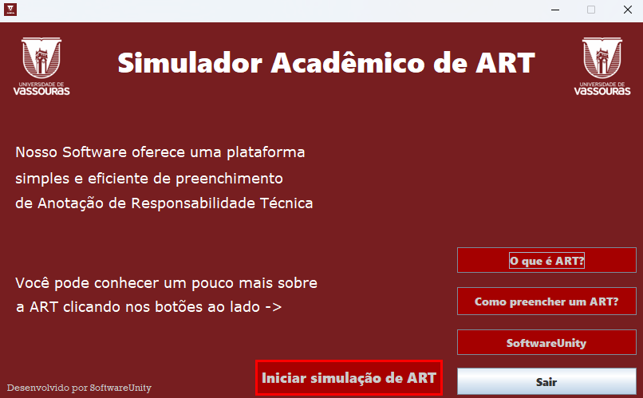
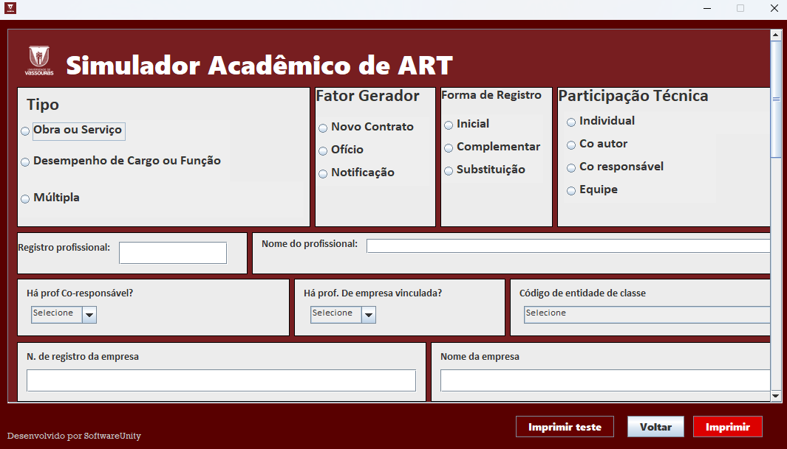
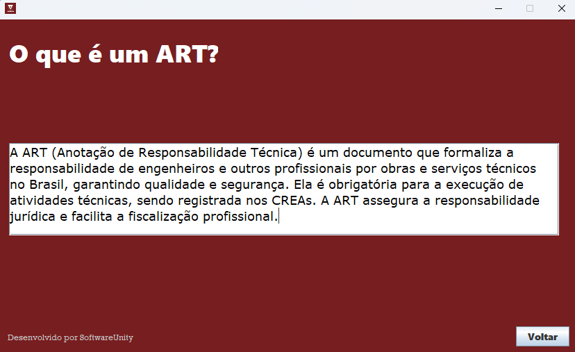

Anotação de Responsabilidade Técnica
Este projeto foi desenvolvido por:
Rian Ciscotto,
Gustavo Félix,
Felipe Baba e
Gabriele Almeida.
O simulador foi criado como parte de um trabalho acadêmico para o desafio das engenharias da Univassouras, com o objetivo de aprofundar conhecimentos práticos em:
- Desenvolvimento desktop com Java
- Integração com Apache Ant
- Uso do Apache NetBeans como IDE
- Empacotamento do executável com Launch4j
- Modelagem com diagramas de caso de uso e de classes
Tela inicial:
Formulário ART:
Nessa tela o usuário pode preencher os campos da ART e imprimir em diversos formatos, PDF, Impressão Física, etc. Caso o usuário esqueça de preencher algum campo, o programa emite um alerta.
Descrição ART:
Nessa tela o usuário pode ler sobre o que é uma ART
